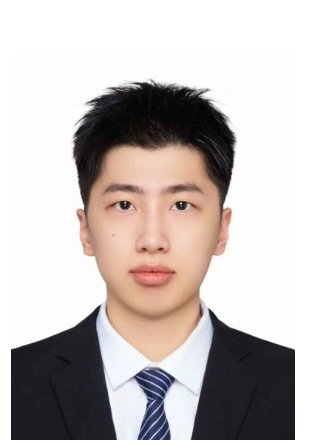
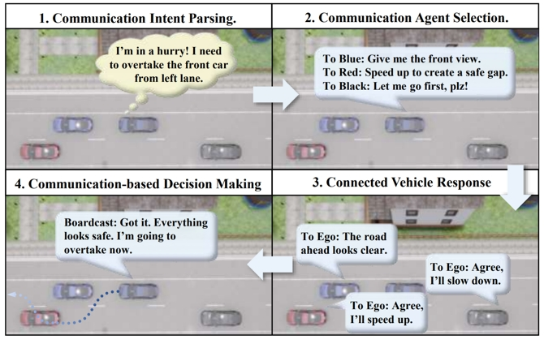
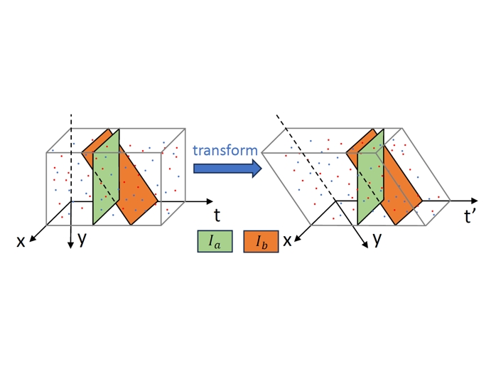
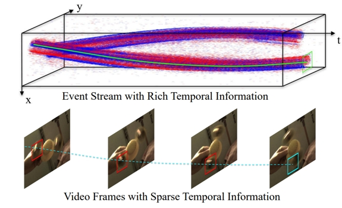
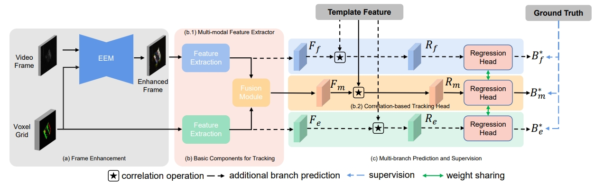
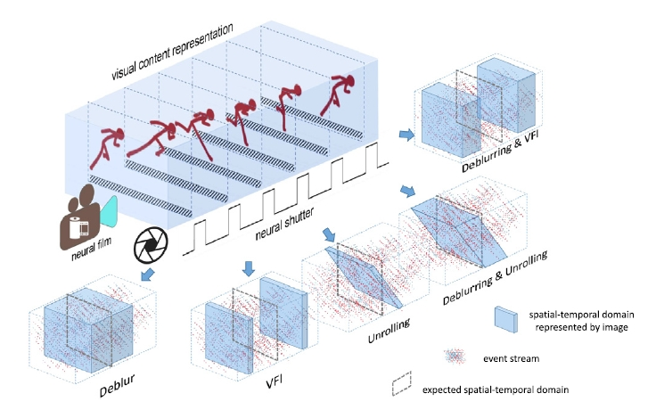

黄贺飞
Ph.D. Candidate in Information & Communication Engineering, Dalian University of Technology
I am currently a Ph.D. candidate in Information and Communication Engineering at Dalian University of Technology. My research interests include event-based vision, visual enhancement and tracking, autonomous driving, and VLM post-training.





Fusing historical temporal information to address single-frame VLA limitations: insufficient occlusion recovery, behavioral jitter, and low intent prediction accuracy. Designed rule-based temporal data mining, auxiliary supervision heads for motion features, and LLM-based motion sequence understanding with scene consistency loss.
Addressed low-light, long-exposure motion blur in traffic surveillance. Developed event-guided image restoration with simulated event data generation, real event stream denoising, Sim2Real distribution alignment, and hybrid supervised/unsupervised training. Achieved SOTA performance with ~7% Laplacian variance improvement and ~10% NIQE reduction.